Visão Geral
Princípios e regras gerais. Todos os valores desta página vêm de src/index.css (bloco .dark) e tailwind.config.ts. Onde o código não define, está marcado A DEFINIR.
Calor
Neutros de subtom marrom, nunca cinza frio. Superfícies suaves, cantos arredondados, ícones de argila.
Clareza no dia a dia
Uma ação principal por tela. Texto curto, verbos claros. Quem está cansado entende de relance.
Mobile primeiro
Tipografia e espaçamento fluidos (clamp), áreas de toque generosas, safe-area respeitada (.pb-safe).
Acessibilidade
Contraste mínimo WCAG AA, foco visível, prefers-reduced-motion respeitado, estado nunca só por cor.
Regras gerais de uso
Normativas. As marcadas com ⚠ divergem do código atual e estão detalhadas abaixo.
- R1 ⚠O acento aparece em exatamente três contextos: (1) estado ativo da navegação, (2) rótulos eyebrow, (3) destaques numéricos. Em qualquer outro lugar, use neutros.
- R2Hierarquia por camadas tonais. Quanto mais "perto" do usuário, mais clara a superfície (
surface-container-lowest → highest). Bordas e sombras são reforço, não base. - R3Sem azul como cor de marca. Azul só em estados informativos do sistema (ex.: toast info, coluna "Em Andamento").
- R4Todo texto de interface passa por i18n (
pt-BR,en-US,es-ES). A fonte de verdade é pt-BR. - R5Movimento discreto. Easing
--ease-out-quart, durações 150/250/400/600 ms. Sem bounce exagerado.
Reconciliação: briefing × código
O briefing descreve valores que ainda não existem no código. Esta documentação usa o código; as diferenças ficam registradas aqui para decisão.
| Item | Briefing | Código hoje | Status |
|---|---|---|---|
| Acento | #C8943A âmbar | --primary #e07e59 (terracota). Âmbar mais próximo: honey-500 #e5a520 | A DEFINIR |
| Fundo base | #0A0908 | --background #141312; o mais escuro é #0e0d0c | A DEFINIR |
| Fundo mais claro | #1E1C19 | --card #1e1c1a (quase igual); topo da escala #32302c | Próximo |
| Texto | #F0EDE6 | --foreground #f5f5f4 | A DEFINIR |
| Uso do acento (R1) | 3 contextos | --primary também em botões, foco, badges "warm", checkbox hover e links | Código excede a regra |
| Bordas | Evitar | Cards, inputs e botões outline usam border-border (branco 9%) | Código excede a regra |
| Cores de módulo | 6 cores de identidade | Não existem tokens de módulo | A DEFINIR |
| Modo claro | Fora do escopo | Existe (:root, terracota #c05621); não documentado aqui | Fora do escopo |
Cor
Duas camadas: a paleta primitiva (valores brutos) e as funções semânticas (o que cada valor faz). Componentes só devem consumir as funções semânticas.
Paleta primitiva
Neutros quentes — modo escuro
Texto
Acento — terracota (tailwind.config.ts)
Mel (honey) — avisos e prioridade
Sálvia (sage) — sucesso e prioridade baixa
Linho (linen) — neutros de apoio
Funções semânticas
Razão calculada ao vivo contra o fundo indicado. Alvo: texto normal ≥ 4.5:1, texto grande e componentes de UI ≥ 3:1.
| Função | Token | Valor | Sobre | Contraste | AA |
|---|
placeholder do input usa muted-foreground a 70% de opacidade. Veja a linha correspondente na tabela: se reprovar AA, o código precisa subir a opacidade.Cores de identidade de módulo
Tarefas, Compras, Financeiro, Avisos, Calendário e Futuro. O código não define tokens de módulo — os valores abaixo estão A DEFINIR. Ao lado, candidatas já existentes nas escalas acima, com contraste real sobre #141312, apenas para apoiar a decisão.
Candidatas nas escalas existentes (não atribuídas)
| Candidata | Valor | Contraste sobre #141312 | AA (texto / UI) |
|---|
Tipografia
Três famílias carregadas em index.html. Corpo e UI em Inter; títulos em Plus Jakarta Sans (.font-display); apoio editorial em Manrope (.font-editorial).
400 500 600 700 · body, .font-ui
400–800 · .font-display
400–800 · .font-editorial
Escala
Fluida via clamp(); os tokens são --text-xs … --text-4xl. Tamanhos abaixo mostram o mínimo → máximo. Pesos e entrelinhas por nível não são definidos no código: A DEFINIR (a demonstração usa 700 + display para títulos).
1.875 → 2.5rem
1.5 → 2rem
1.25 → 1.5rem
1.1 → 1.25rem
1 → 1.125rem
0.9 → 1rem
0.8 → 0.875rem
0.65 → 0.75rem
tracking-wider
Regras de escrita
Tom
- —Caloroso e direto, como alguém da família falando. Sem jargão, sem "usuário".
- —Português do Brasil, tratamento por "você". Frases curtas, voz ativa.
- —Erros explicam o que fazer, não só o que falhou.
Rótulos de ação começam com verbo
Faça
Adicionar tarefa · Marcar como comprado · Salvar meta · Convidar alguém
Evite
Nova tarefa · Comprado · Meta · Convite
Fundamentos
Espaçamento, raios e elevação.
Espaçamento
Tokens fluidos --space-*. Barras abaixo mostram o valor máximo do clamp. O código também usa a escala padrão do Tailwind (ex.: gap-3, px-4).
Raios
Concêntricos: o raio interno é sempre menor que o externo.
—
Nota: o comentário em index.css diz "md — controles", mas Button e Input usam rounded-lg (12px). Vale alinhar. A DEFINIR
Elevação por camadas tonais
Cada degrau é só uma superfície um pouco mais clara. A sombra, quando existe, apenas confirma o que a cor já diz.
inset 0 1px 0 rgba(255,255,255,.05–.08) faz o papel da borda superior: dá borda de luz sem linha pesada.Uso de Componentes
Comportamento e anatomia. Estados seguem o código: hover em 150 ms, foco com anel, desabilitado a 50% de opacidade, toque com scale(.96).
Botão
- 1Uma primária por tela. Ações de apoio usam secundário; ações discretas, ghost.
- 2Anatomia: ícone opcional (16px) + rótulo com verbo. Altura 36px (sm 32, lg 40). Raio lg.
- 3Carregando: troca o ícone por spinner e bloqueia clique (
aria-busy). - 4Perigo: variante
destructive, sempre com confirmação.
Input
- 1Rótulo sempre visível acima, em caixa-alta pequena. Placeholder é exemplo, não rótulo.
- 2Foco: borda e anel no acento a 80%/20%.
- 3Erro: mensagem curta abaixo, com ícone; cor
--destructive. Estilo de erro do input A DEFINIR
Badges
- 1Prioridade sempre com texto (Urgente/Alta/Média/Baixa) e ponto — nunca só cor.
- 2Categoria é neutra (pílula cinza-quente). Use a variante warm só para destacar uma categoria selecionada.
Navegação por tab
- 1Ativo: fundo do acento a 15%, texto e ícone no acento, peso 600. É um dos três usos do acento (R1).
- 2Inativo: texto a 70%, ícone a 50%. Hover clareia a superfície.
- 3Item ativo também recebe
aria-current="page".
Card de tarefa
- 1Anatomia: checkbox circular → título → descrição (2 linhas) → linha de metadados (prioridade · categoria · responsáveis · prazo).
- 2Concluída: título riscado, opacidade 75%. Atrasada: prazo em terracota com ícone de alerta.
- 3Checkbox desabilitado (tracejado) quando a pessoa não é responsável, com dica explicativa.
Item de compras
- 1Anatomia: checkbox circular 28px → nome → quantidade · categoria.
- 2Estados: pendente, comprado (verde, riscado), ignorado e não comprado (vermelho).
- 3Linha inteira é clicável; o checkbox faz stop-propagation.
Componentes
Réplicas fiéis dos estilos em src/components/ui e dos módulos. Estados fixados por classe para documentação; o botão e os campos também respondem de verdade a hover e foco.
Botões
Código também tem outline, destructive, link e warm; aqui, as três pedidas.
Inputs
Badges de prioridade
Fonte: PRIORITY_CONFIG. O código tem 4 níveis; "Urgente" é extra ao briefing. Badges não são interativos, então hover/foco não se aplicam; estado desabilitado = 50% de opacidade.
Badges de categoria
Item de navegação por tab
Card de tarefa
Réplica de TaskCard.tsx. Estado "desabilitado" = pessoa sem permissão (checkbox tracejado).
Item de lista de compras
Iconografia
Dois sistemas, cada um com seu papel: ícones 3D de argila para identidade e momentos de acolhimento; Lucide para a interface funcional.
- 1Sempre voltados para a esquerda (em direção ao conteúdo, no padrão de leitura LTR).
- 2Sem rostos. Objetos, não personagens.
- 3Aparência de objeto real: cesta, prancheta, cofrinho, sino — com volume e material de argila.
- 4Arquivos WebP otimizados em
public/icons/clay-optimized/. Decorativos:alt="".
- 1Para ações e estados funcionais: adicionar, concluir, excluir, alerta, navegação.
- 2Traço de 2px, cantos arredondados,
currentColor. Tamanho típico 14–16px. - 3Ícone sozinho precisa de
aria-label.
Biblioteca clay (módulos)
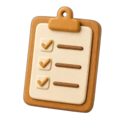
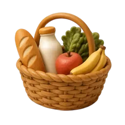
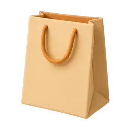
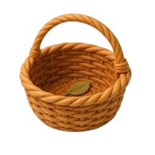
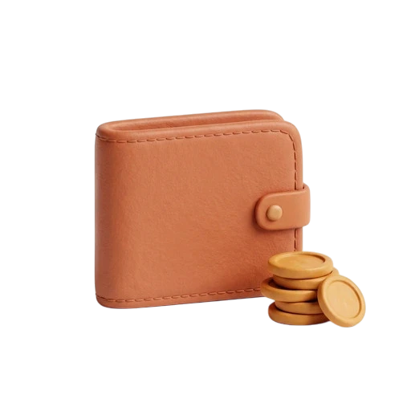
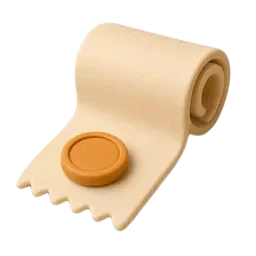
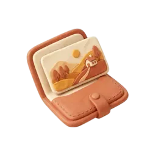
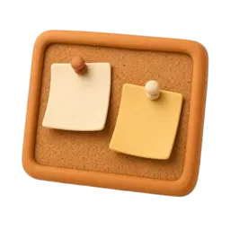
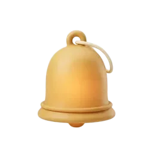
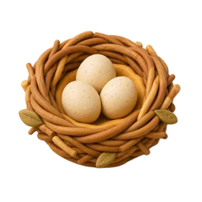
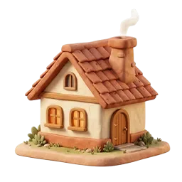
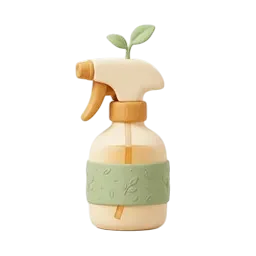
Mapeamento módulo → ícone clay, e ícone clay do módulo "Futuro": A DEFINIR. O caminho das imagens é relativo a docs/; abra o arquivo a partir do repositório para vê-las.